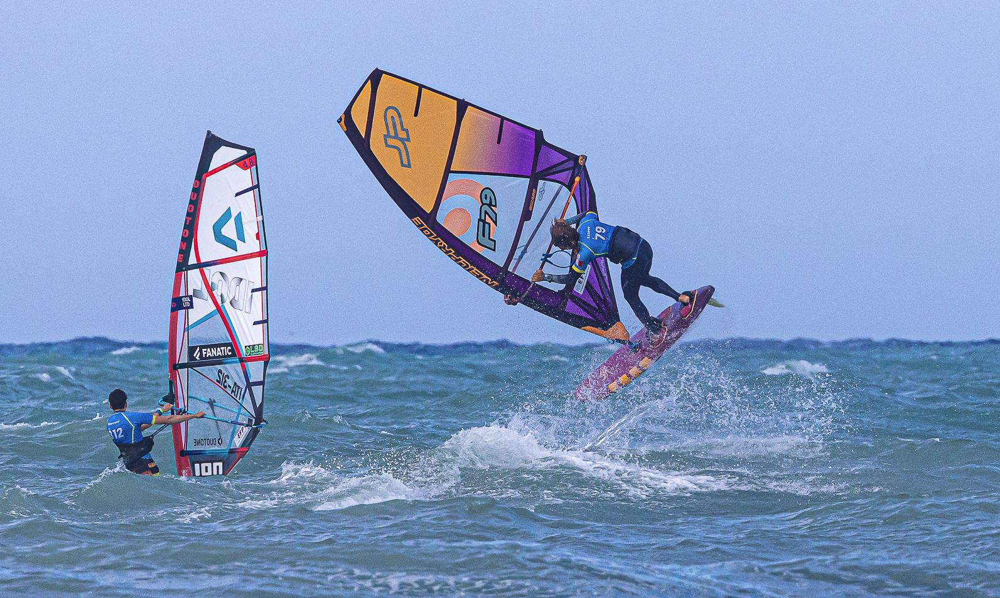
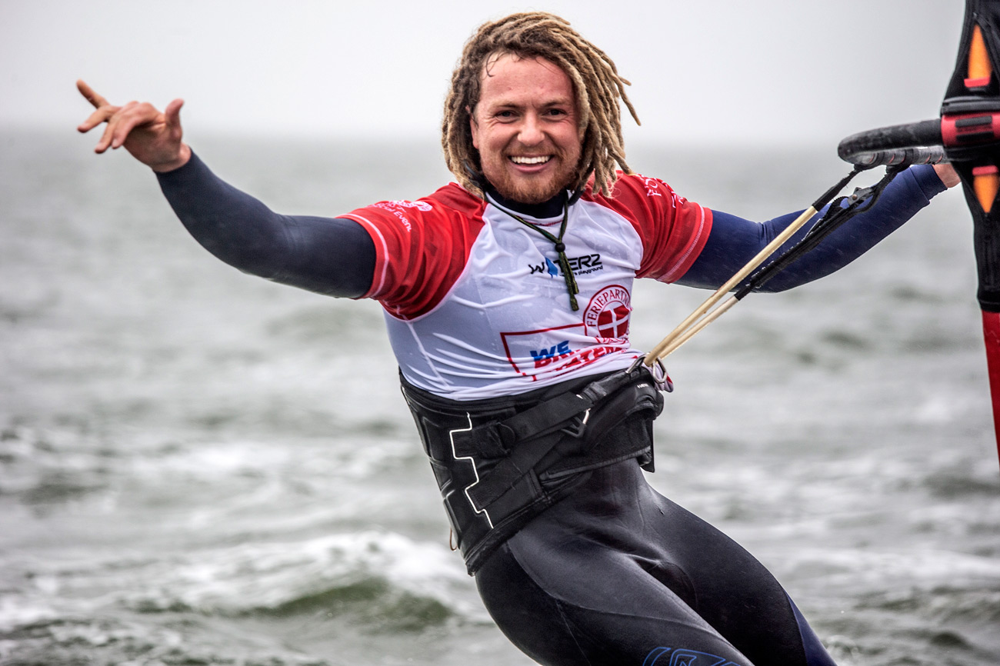
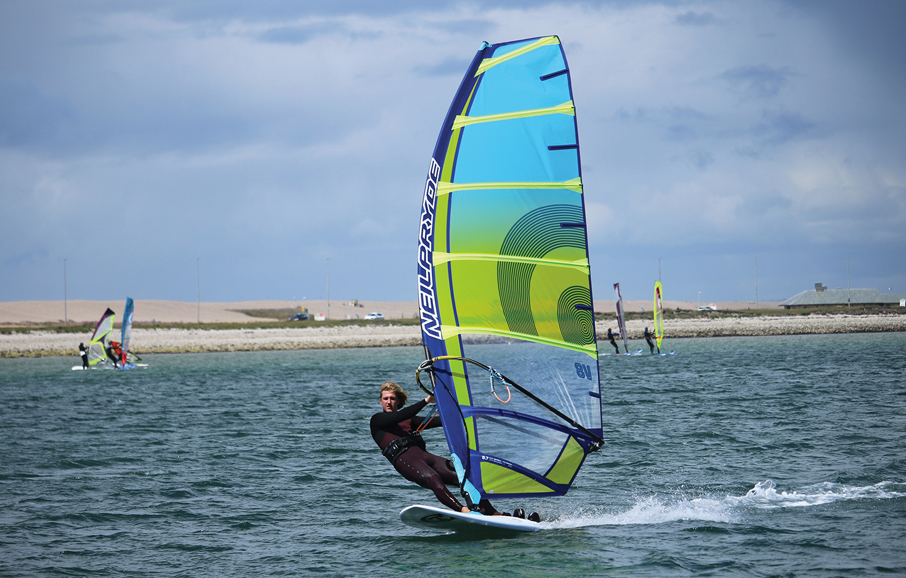
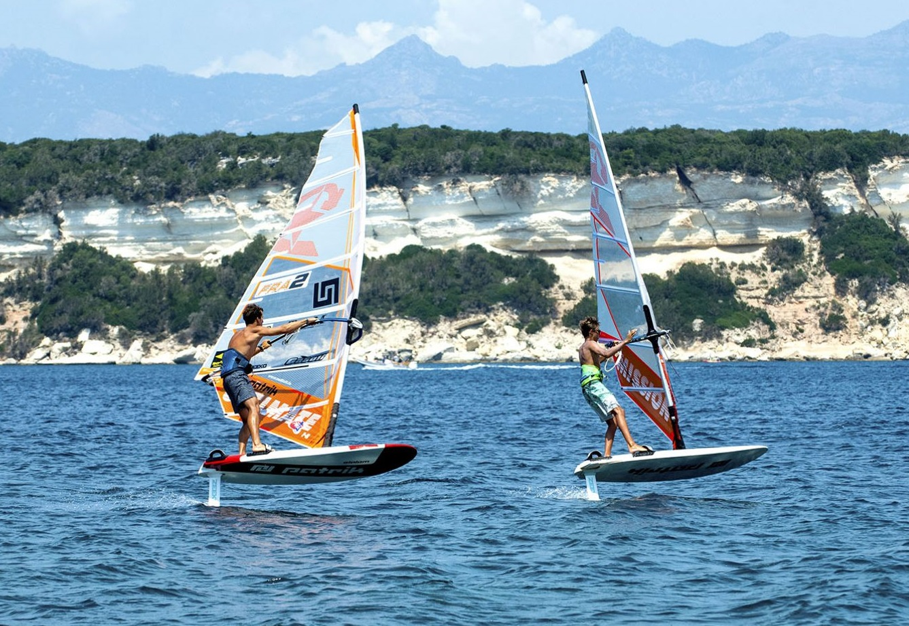
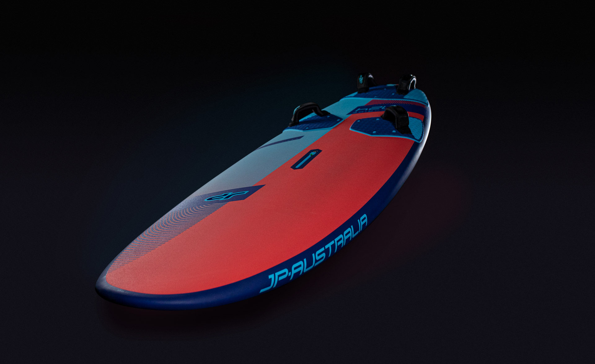
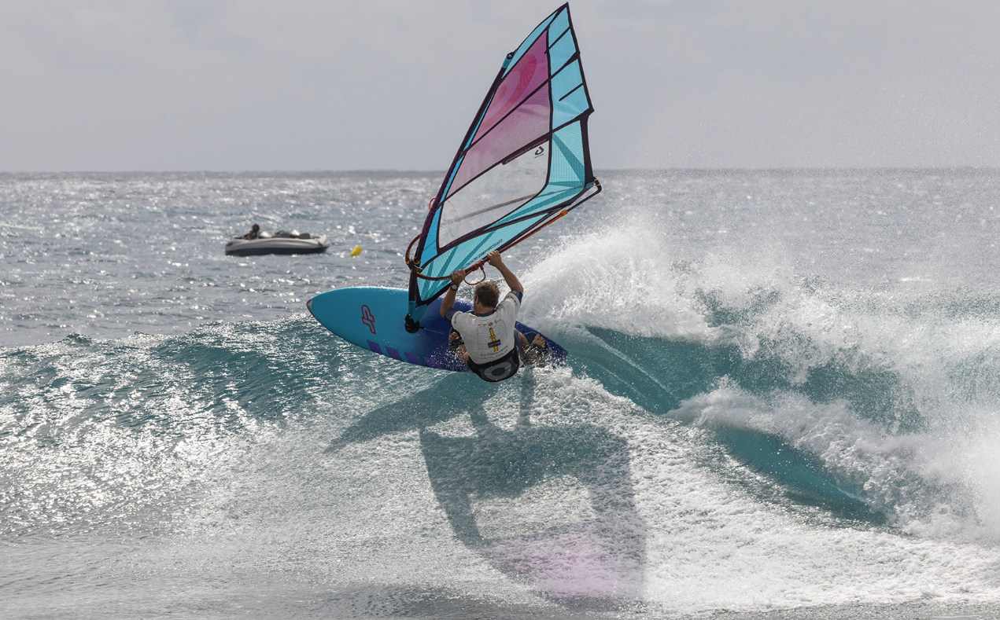
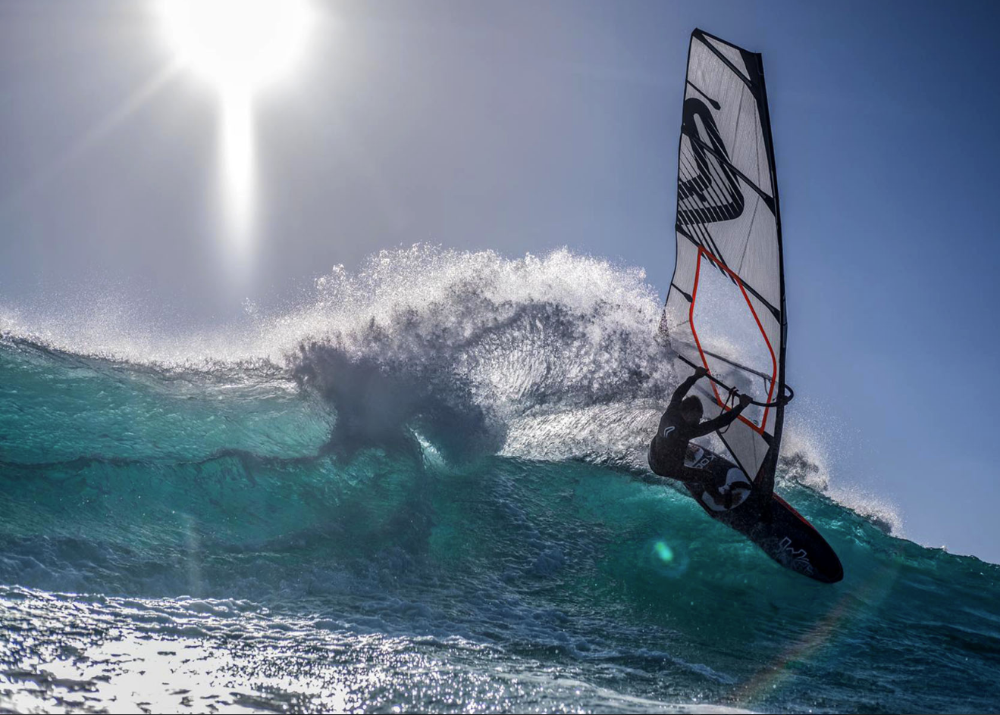
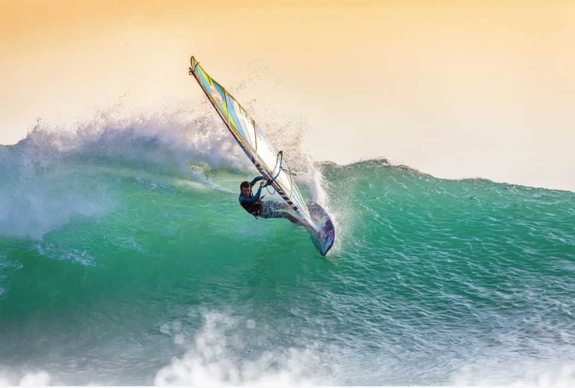
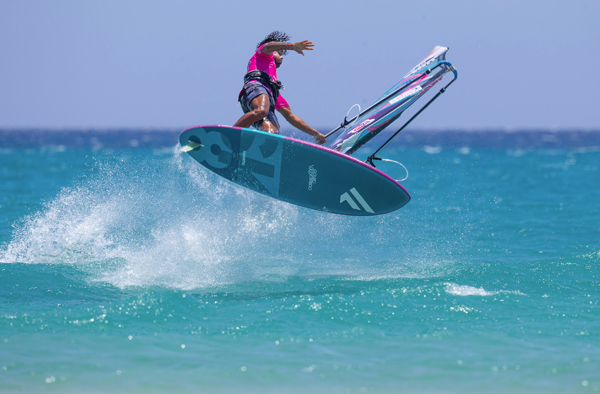

Novosti
EFPT Italija - Vieste 2022
The first day of the EFPT Spiaggia Lunga Vieste 2022 saw registration, rain and lots of waiting. Excitement is high among the riders as the forecast for the upcoming days is epic to say the least, but the first day got off to a slow start. Travelling down to the south of Italy from all over the world, the athletes enjoyed a day of catching up with each other on the beach. On the second day of the EFPT event in Italy the conditions filled in around midday, allowing for two rounds of the Single Elimination to be run. With some proper waves rolling in through the competition area, the countless spectators on the beach were treated to an impressive display of aerial manoeuvres. [Cijeli članak]
Natjecanja
Intervju - Maciek Rutkowski
Several national titles, a lot of winner finals on the PWA Slalom tour, IFCA & PWA youth champion titles, brilliant rankings in formula and foiling and so on. The Polish windsurfing pro Maciek Rutkowski has been racing for more than 16 years and he had his PWA debut in 2003. Maciek is not only a racer. He is an all-rounder and already competed at PWA wave events, sailed in double mast high waves at Jaws in Hawaii or rode huge waves at Tenerife’s west coast. We caught up with Maciek for a short interview about his first ever PWA Slalom podium finish. [Cijeli članak]
Intervju
Test - Neil Pryde V8 8.7 2021
The V8 retains its place in the Neil Pryde lineup as their twin-cam powerhouse, developed in line with the brand's reputed RS:Racing programme. The custom printing, unique to Pryde, certainly enhances the V8's visual appearance from afar - it's a stunning looking sail. The largest sail in this test, the V8 feels big and bold in the hands, yet poised and ready, rather than heavy or cumbersome. A sail for the seasoned rider, looking for that easy to use engine with that extra bit of sparkle and prestige, the V8 offers the performance to match its allure. [Cijeli članak]
Testovi
Korzika- otok ljepote
Only a few hours from mainland France by boat, the Mediterranean island of Corsica lives up to its name as the “Isle of Beauty”. It offers a range of accommodation to suit all tastes and budgets, from public campsites to 5 star hotels and perfect conditions for slalom and Freeride windsurfing. This year, PWA slalom sailor Benjamin 'Babou' Augé took 3 young sailors, Julien Mangel (15), Antoine Tavan (14) and Esteban de Cruz (13) on a trip to the island to explore its southern shores and offer them some coaching at the same time. [Cijeli članak]
Putovanja
Test - JP Super Ride 124L LXT
The Super Ride is JP's 'sporty freeride' lineup, sitting between their manoeuvre-oriented freeride option in the Magic Ride and performance freeride series - the Super Sport. On the water the Super Ride really impressed us with its blend of user-friendliness and performance, giving it a great deal of versatility to adapt to various riding styles or abilities. It can be ridden for hours, pushing hard through challenging seas, without ever feeling it's sapped you of energy. [Cijeli članak]
Testovi
Cabo Verde PWA World Cup 2022
The Cabo Verde World Cup is a legendary event. Since its first, explosive arrival on the PWA Tour in 2007, it has been one of the most sought after detsinations for the dedicated wave rider. Uniquesly positioned to benefit from the full force of Atlantic swell, Cabo Verde is a dream location for the best of the best. This is the first time in 12 years that the finest wave sailors in the world have returned to the world class break of Ponta Preta and if you are lucky enough to remember previous editions, you'll recall some of the best competition windsurfing ever seen with full rail turns and huge aerials providing absolutely scintillating action. [Cijeli članak]
Natjecanja
Intervju - Jaeger Stone
On March 12, 2019 Jaeger Stone won the Red Bull Storm Chase. Magheraroarty Beach in Ireland was the place to be as wind speeds of 121 kph and eight metre waves battered the Irish coast. The Australien, who never saw falling snow before live, was the rider who showed the best overall performance. In the official press release it was stated that Jaeger's multiple solid wave rides and jumps, along with a biggest wave hit bonus, sealed the deal. We caught up with Jaeger Stone to speak about his cold water experience, the difficult moments, his personal limits, the preparation etc. [Cijeli članak]
Intervju
Indonezija - Zlatna Java
The Indonesian archipelago is a prime area for surf exploration. Leon Jamaer, Camille Juban, Flo Jung and photographer Gilles Calvet went off grid in Java and struck wave sailing gold. Read on as the crew reflect on the trip and the reflective thoughts it provoked. The memory of this particular magazine article is still bright and clear. I see Thomas Traversa placing a cutback on a perfectly shaped wave that must be almost twice mast- high. Kauli Seadi is talking about the ruthless reefs of this magical place in the Indian Ocean. Their journey only finishes once all masts are broken and there is no more spare equipment. [Cijeli članak]
Putovanja
Fuerteventura PWA Grand Slam 2019
Finals day at the 2019 Fuerteventura PWA World Cup saw an explosive end to proceedings as the top 4 men and women left standing in the Freestyle Double Eliminations went all out in the pursuit of victory. In the women's fleet, it was the usual suspects who prevailed, but in the men's fleet, it was another event filled with upsets, close calls, and colossal battles, with the finest of margins separating the elite of the Freestyle World. Sarah-Quita Offringa reinforced her title as the Queen of Freestyle by claiming an incredible 12th Freestyle World crown, while Steven Van Broeckhoven became the first man to win a PWA Freestyle World Cup other than either Amado Vrieswijk or 9-time Freestyle World Champion - Jose 'Gollito' Estredo since 2016. [Cijeli članak]
Natjecanja